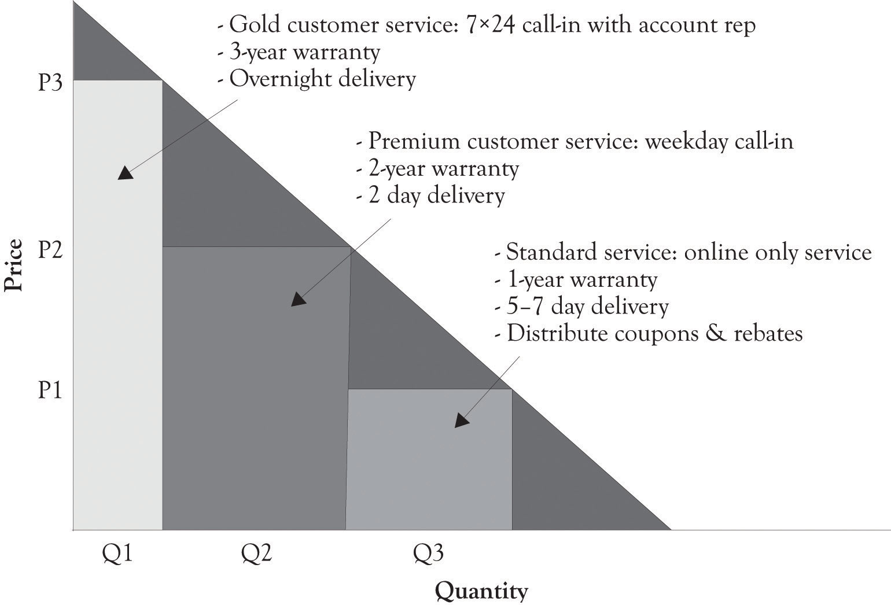

Competition in the restaurant, hotel, bars, and motel businesses is fiercely monopolistically competitive. Typically, these businesses compete on atmosphere, the level of service, and the uniqueness of their offerings. A Midas high-end hotel can have boutique rooms, spas and fitness rooms, and a vast array of food choices from room service to expensive high-end dining. In contrast, the Hermes hotel can be clean, Spartan, and in close proximity to fast food and casual dining outlets. The drama is in the details. Fresh flowers in the room, a free breakfast, and free cookies can attract customers. In most instances, the benefits of a given differentiation strategy are transitory, and new features have to be added or existing features need to be refreshed in order to compete effectively. Figure 4.5 "PD Curve for Restaurants" illustrates a PD curve for fast food, casual dining, and fine dining restaurants.
Figure 4.5 PD Curve for Restaurants

Figure 4.6 Differentiating a Standard or Similar Product
